XiaoZhi Sample Project
中文 | English
Introduction
This sample project is based on the Edgi-Talk platform, demonstrating the basic functions of the XiaoZhi voice interaction device, running on the RT-Thread real-time operating system. With this project, users can quickly verify the device’s WiFi connection, button wake-up, and voice interaction capabilities, providing a fundamental reference for further application development.
Software Description
The project is developed based on the Edgi-Talk platform.
The sample includes the following functions:
WiFi connection and status display
Button wake-up and voice interaction
Device state management (standby, listening, sleep, etc.)
Usage
n> ⚠️ Note: This project requires RT-Thread Studio 2.2.9 or higher.
Prepare Wi-Fi resources (first-time setup)
The Wi-Fi host driver loads three blobs (firmware .bin, regulatory .clm_blob, and board-specific nvram.txt) from FAL before it can power up the radio. These files live outside the application image, so flashing a new binary will not refresh them automatically. The default bundles for Edgi-Talk live in the workspace root under resources/.
Keep
WHD_RESOURCES_IN_EXTERNAL_STORAGE_FALenabled in menuconfig and make sure the FAL table provides thewhd_firmware,whd_clm, andwhd_nvrampartitions (the defaults reserve 512 KB + 32 KB + 32 KB of on-chip flash).Attach a serial terminal, reboot into the
mshprompt, and run the download helper for each partition:
whd_res_download whd_firmware
whd_res_download whd_clm
whd_res_download whd_nvram
Each command switches to YMODEM mode. Use a terminal that supports YMODEM upload (Xshell) to send the matching files from the top-level resources/ directory .
Wait for the
Download … successmessage before moving to the next partition.Power-cycle or reset the board after the three transfers so Wi-Fi starts with the freshly stored blobs. Re-run the command whenever you update the firmware/CLM/NVRAM bundle.

1. First-time setup (AP configuration)
When the development board starts, it will enter AP mode. Connect your phone or computer to the device hotspot (password shown on the screen):
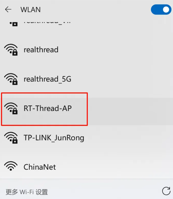
After a successful connection, open a browser and enter 192.168.169.1 to access the configuration interface:
Click Scan to search for nearby Wi-Fi hotspots:
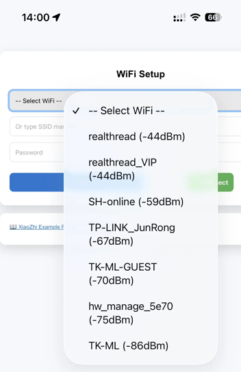
After the WiFi connection is successful, the following page will be displayed:
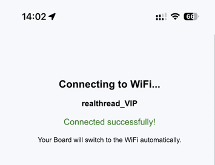
When the device screen shows “Standby”, it means voice interaction is ready:
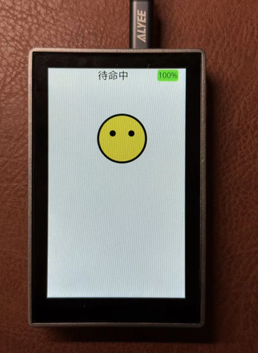
Tip: Press the first user button on the development board to enter voice input. After waiting 1–2 seconds, XiaoZhi will automatically respond.
XiaoZhi Expression Meaning
1. Connecting (please wait)
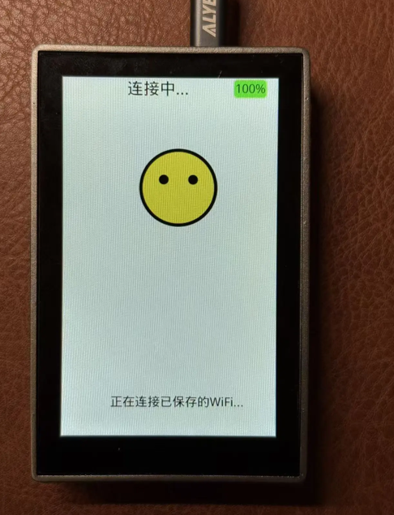
3. Listening (processing your speech)
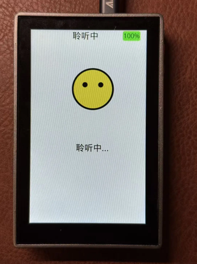
4. Speaking (XiaoZhi is responding to you)
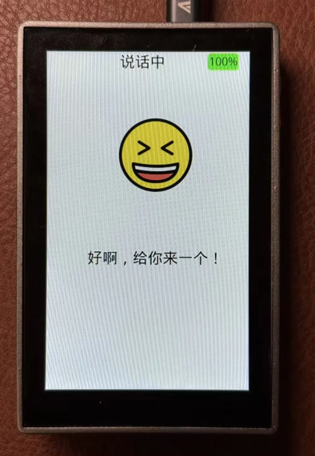
5. Sleep mode (low power)
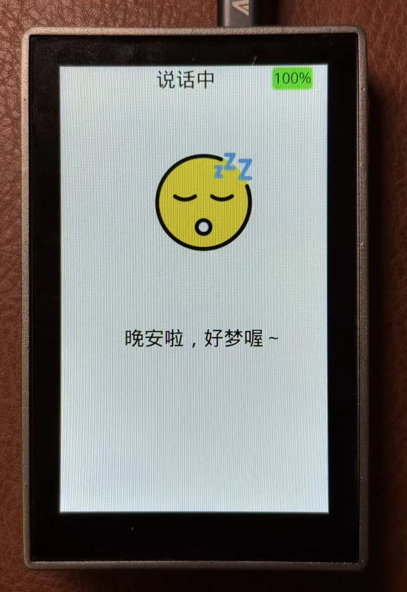
To exit sleep: press the button → wait for “Standby” → interaction becomes available.
Running Effect
After flashing, the device will start the sample automatically on power-up.
Press the top button once to enter the Listening state and interact with the device.
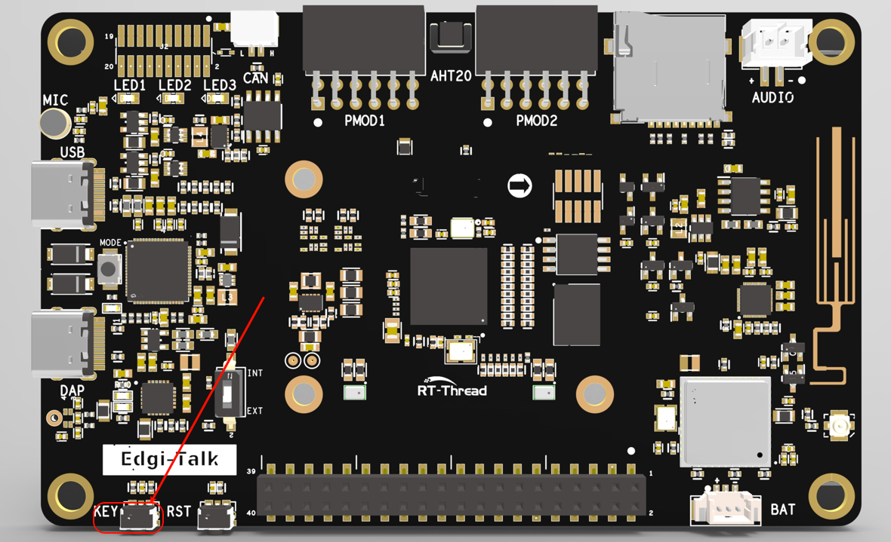
Notes
⚠️ Note: This project requires RT-Thread Studio 2.2.9 or higher.
For first-time use, visit the XiaoZhi official website to complete backend binding.
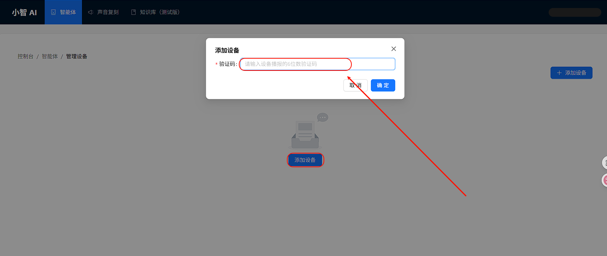
Press the user button to display the verification code on the screen.Please ensure the WiFi SSID and password are correct and that you are using a 2.4GHz network.
The device requires an Internet connection to function properly.
If you need to modify the graphical configuration, use the following tools:
tools/device-configurator/device-configurator.exe
libs/TARGET_APP_KIT_PSE84_EVAL_EPC2/config/design.modus
Save changes and regenerate code after modification.
Startup Sequence
+------------------+
| Secure M33 |
| (Secure Core) |
+------------------+
|
v
+------------------+
| M33 |
| (Non-Secure Core)|
+------------------+
|
v
+-------------------+
| M55 |
| (Application Core)|
+-------------------+
⚠️ Flash in this order strictly to ensure proper operation.
If the example does not run, first compile and flash Edgi_Talk_M33_Template.
To enable M55:
RT-Thread Settings --> Hardware --> select SOC Multi Core Mode --> Enable CM55 Core
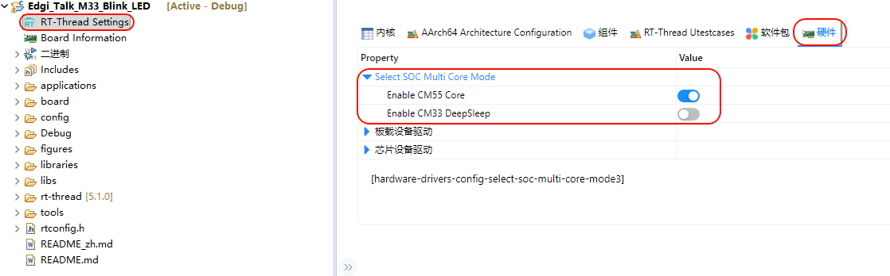